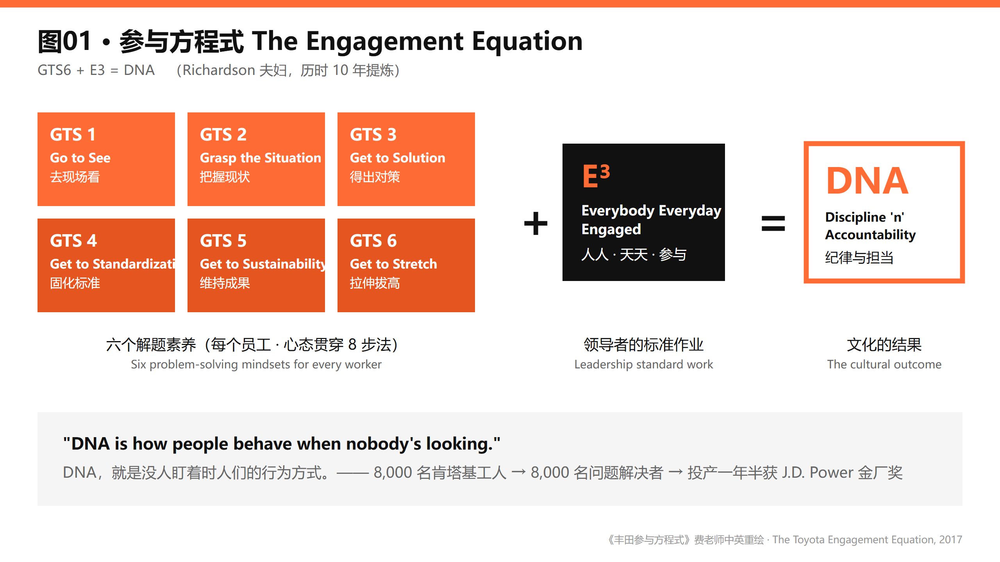
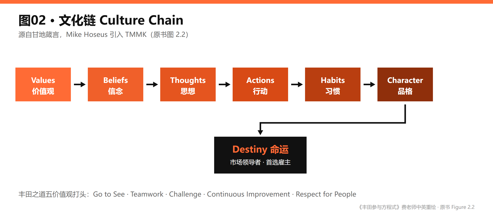
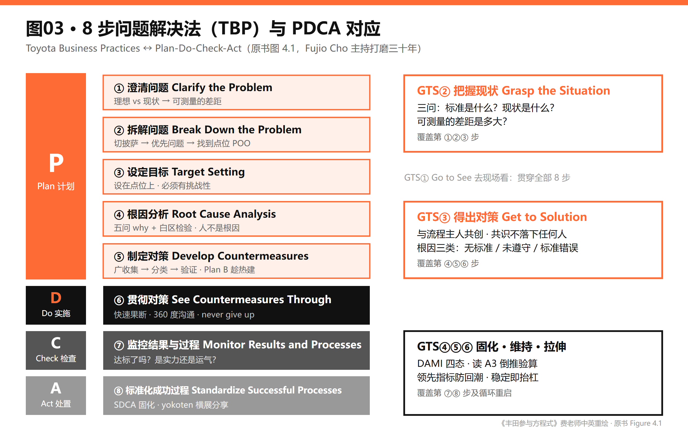
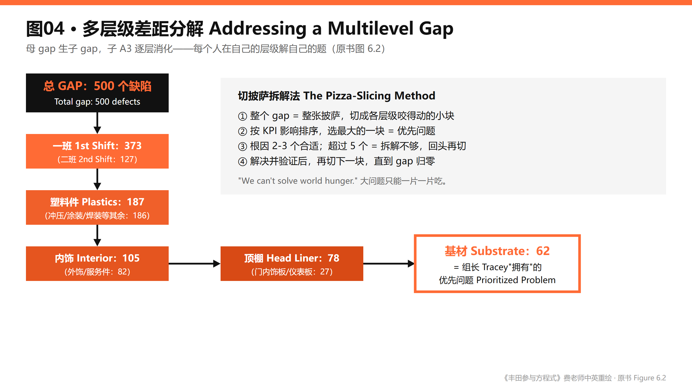
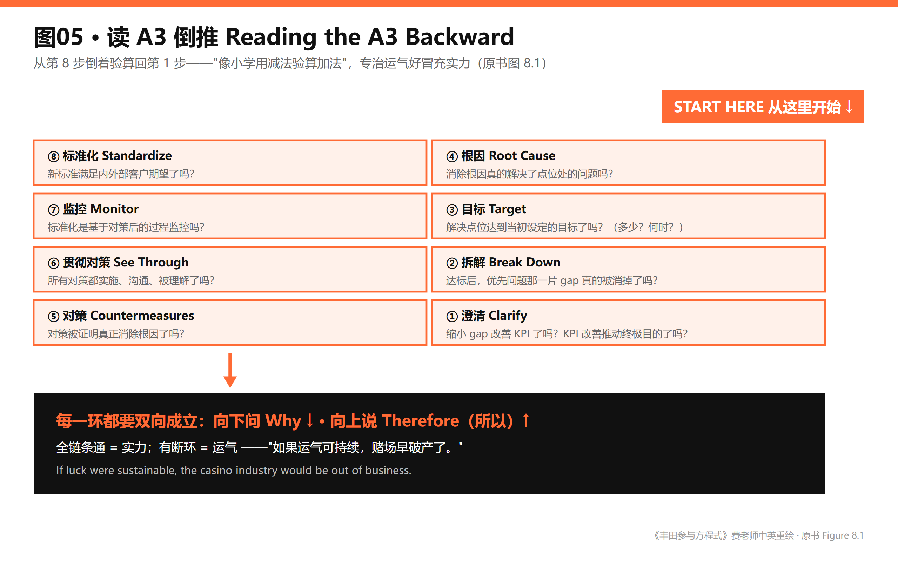
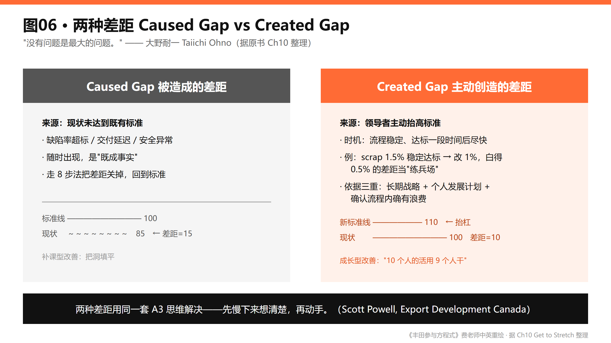
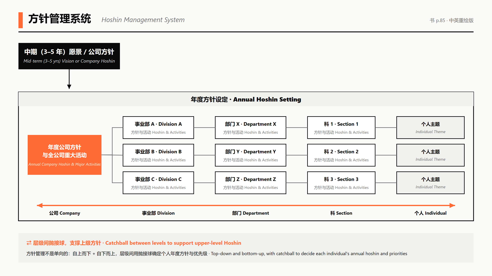
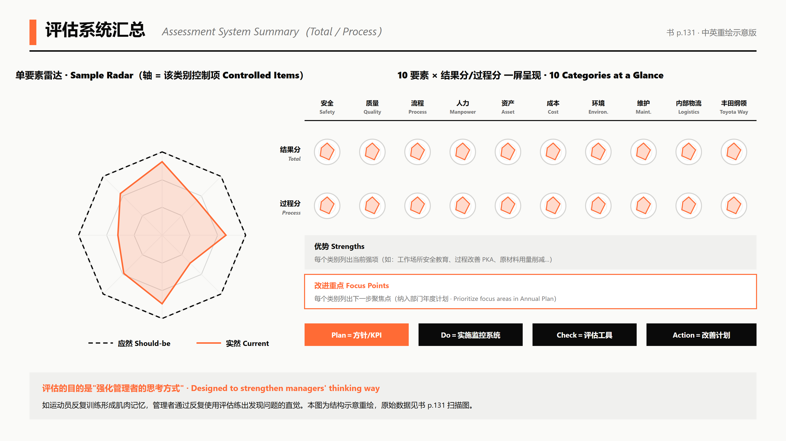
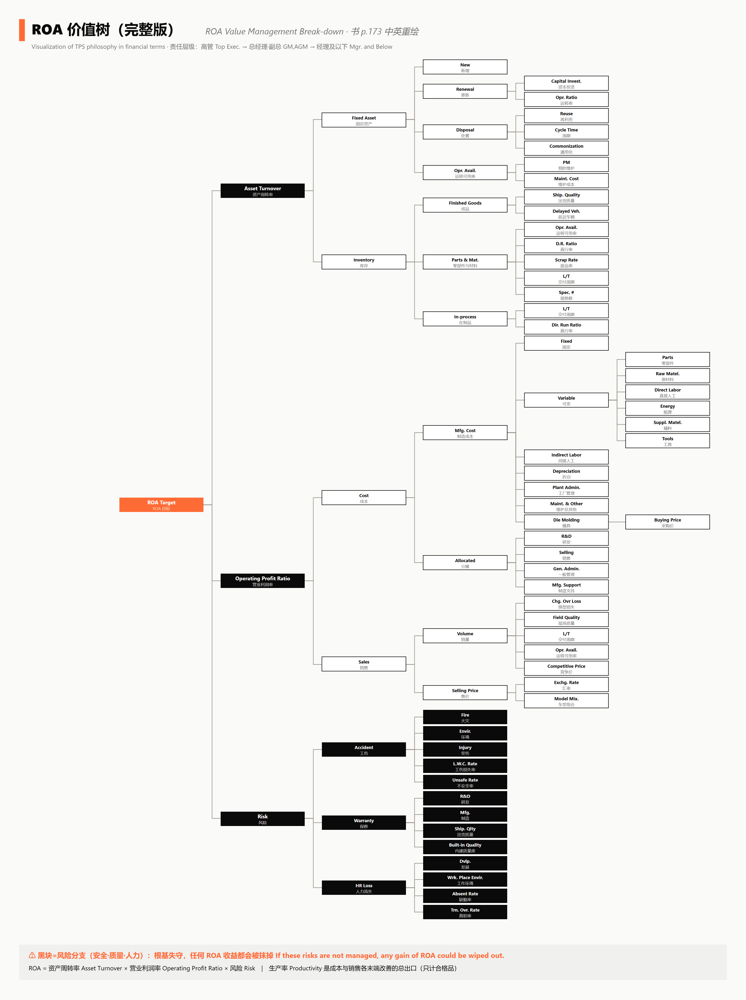

🖼 图解精益
从精益经典原著中提取、中英双语重绘的核心模型图，目前 9 张。
原书截图仅供内部对照，对外一律用重绘版——图中每个标签都做了中英对照，可直接用于课件与内部宣讲。
《丰田参与方程式》
图01 参与方程式总模型
The Engagement Equation (GTS6 + E3 = DNA)

《丰田参与方程式》Intro p.6 / Ch4 · 中英双语重绘：费老师
图02 文化链
Culture Chain

《丰田参与方程式》书 p.36 · 中英双语重绘：费老师
图03 8步TBP对应PDCA
A3 Problem-Solving Process

《丰田参与方程式》书 p.86 · 中英双语重绘：费老师
图04 多层级差距分解
Addressing a Multilevel Gap

《丰田参与方程式》书 p.122 · 中英双语重绘：费老师
图05 读A3倒推
Reading the A3 Backward

《丰田参与方程式》书 p.166 · 中英双语重绘：费老师
图06 两种差距（自绘整合）
Caused Gap vs Created Gap (Ch10 整理)

《丰田参与方程式》书 p.190 · 中英双语重绘：费老师
《欢迎问题收获成功》
图01 方针管理展开图
Hoshin Management System

《欢迎问题收获成功》p.85（物理页 94） · 中英双语重绘：费老师
相关术语：Catchball · 指标树 · 方针管理 · 状态管理
图02 评估系统汇总雷达图
Assessment System Summary（Total / Process Assessment）

《欢迎问题收获成功》p.131（物理页 140） · 中英双语重绘：费老师
相关术语：PDCA循环 · 可视化管理 · 每日管理 · 领先指标与滞后指标
图04 ROA 价值树
ROA Value Tree（ROA Value Management Break-down）

《欢迎问题收获成功》p.173（物理页 182） · 中英双语重绘：费老师
重绘图为费老师原创，可自由用于学习与内部分享，转载请注明出处与原书。